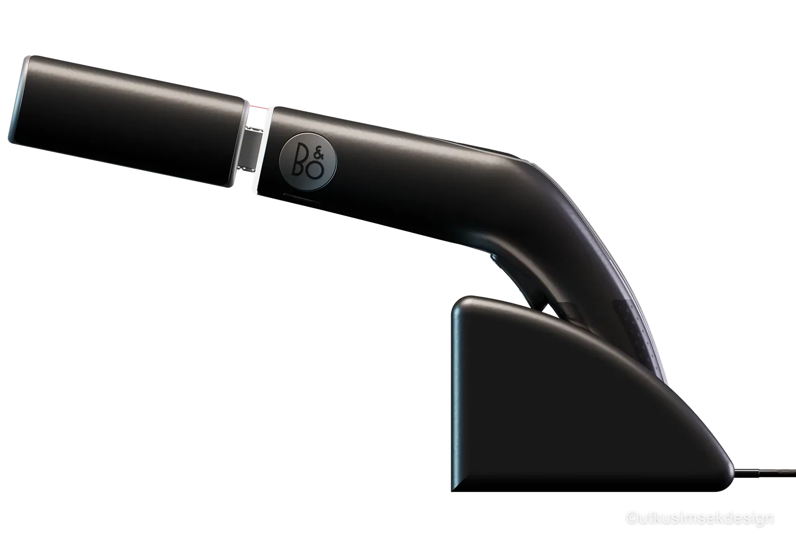
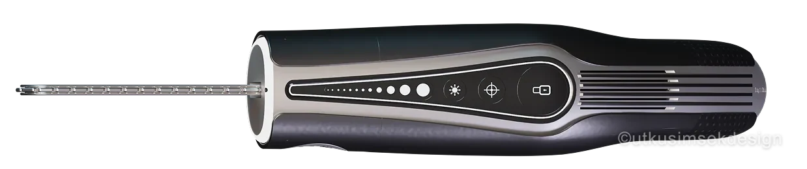
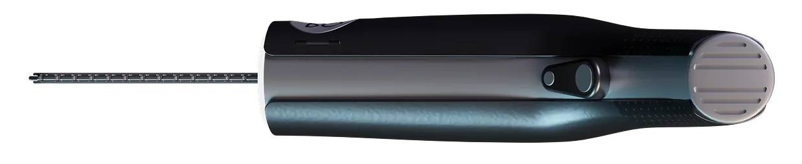
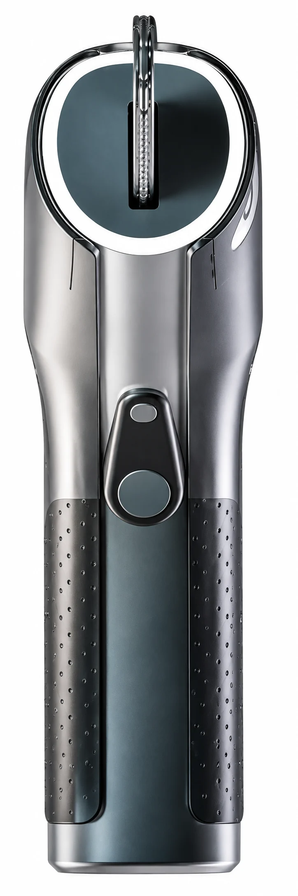
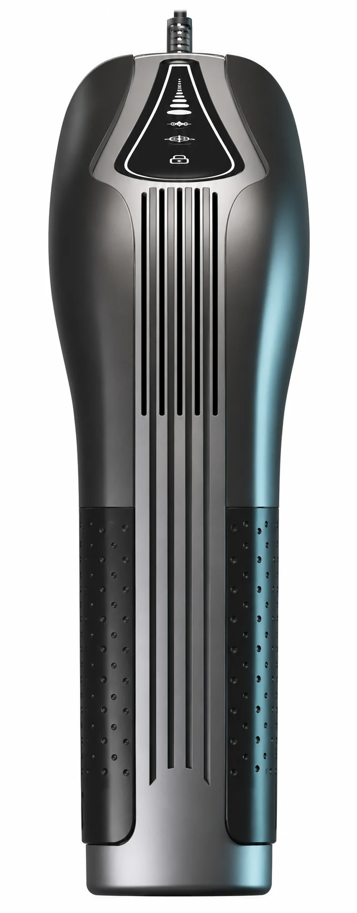
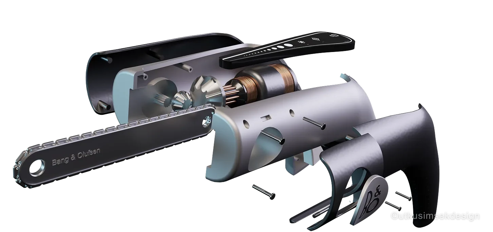

Alet Tasarımı
2022 · Bang & Olufsen
Beo Minisaw
Premium Mini Elektrikli Testere
Aşağı Kaydır
Beo Minisaw — Bang & Olufsen Premium Mini Elektrikli Testere
Beo Minisaw, Bang & Olufsen'in premium tasarım diliyle yeniden yorumlanan, kompakt ve yüksek performanslı bir mini elektrikli testere konseptidir. Minimal formu, ergonomik tutuşu ve rafine malzeme kullanımıyla hem profesyonel hem de bireysel kullanıcılar için konforlu ve güvenli bir kullanım sunar.
Modüler yapısı sayesinde bakım ve parça değişimi kolaylaştırılırken, entegre aydınlatma ve kontrol paneli ile kullanıcı deneyimi üst seviyeye taşınır.
Güç, estetik ve fonksiyonelliği bir araya getiren Beo Minisaw, modern yaşamın ihtiyaçlarına şık ve yenilikçi bir çözüm getirir.






Bang & Olufsen'in minimal form dili, alüminyum ve cam dokunuşu, sade renk paleti ile premium bir el aleti deneyimi; ürün, yerleştirildiği her ortama doğal biçimde dahil olur.
Sökülebilir gövde grupları ve hızlı değişim noktaları ile bakım, batarya ve testere zinciri değişimi kullanıcı tarafından kolayca yapılabilir; ürün ömrü uzar, atık azalır.
Kesim hattını aydınlatan LED ön ışık ve dokunmatik kontrol paneli; hız, mod ve durum bilgileri ergonomik bir ara yüzde toplanarak güvenli, hassas kullanım sağlar.
Yumuşak grip dokusu, dengeli ağırlık dağılımı ve parmak koruyucu yapı; uzun süreli kullanımda yorulmayı azaltır ve hem profesyonel hem bireysel kullanıcılar için güvenli operasyon sunar.